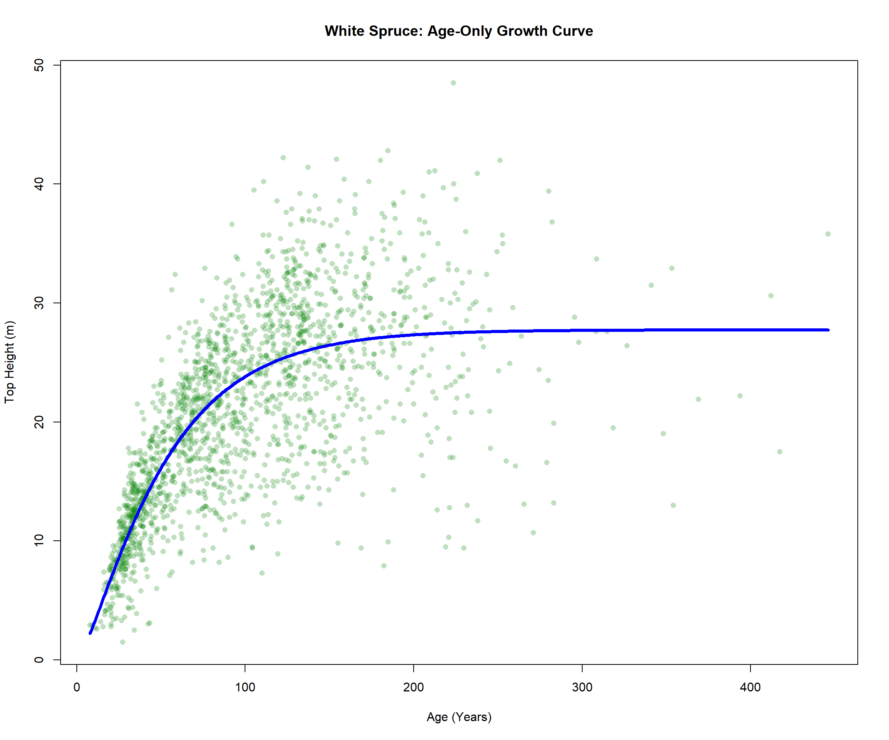
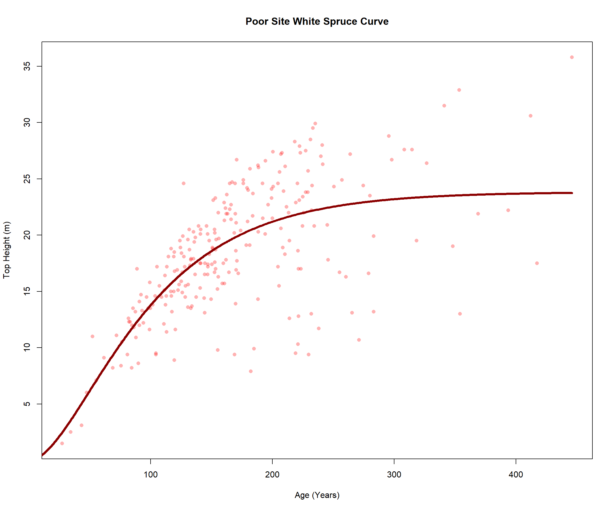
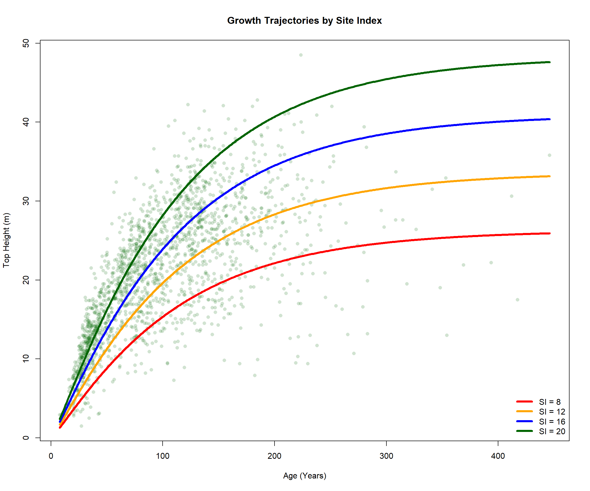
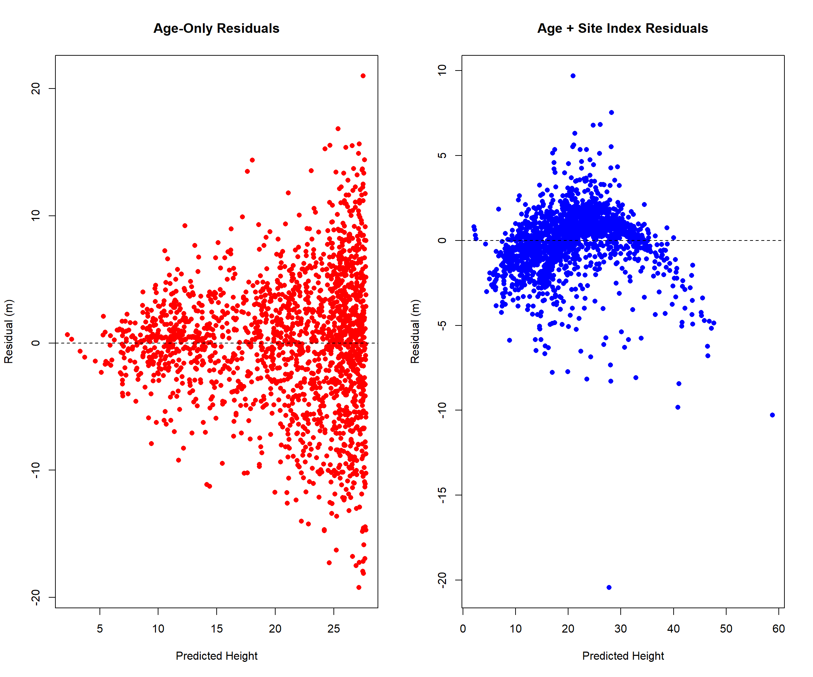
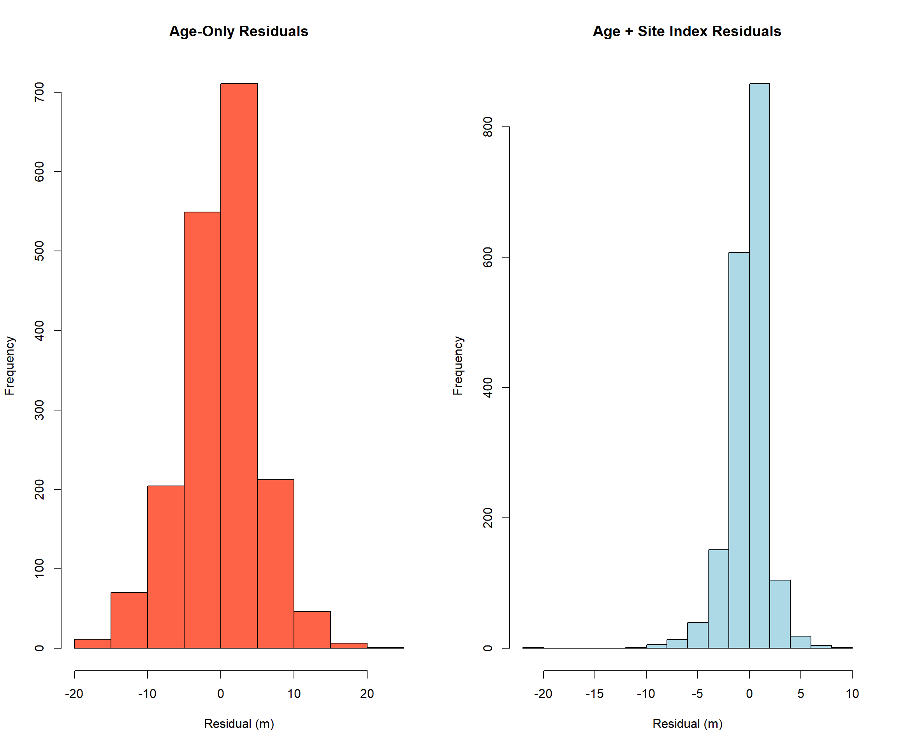
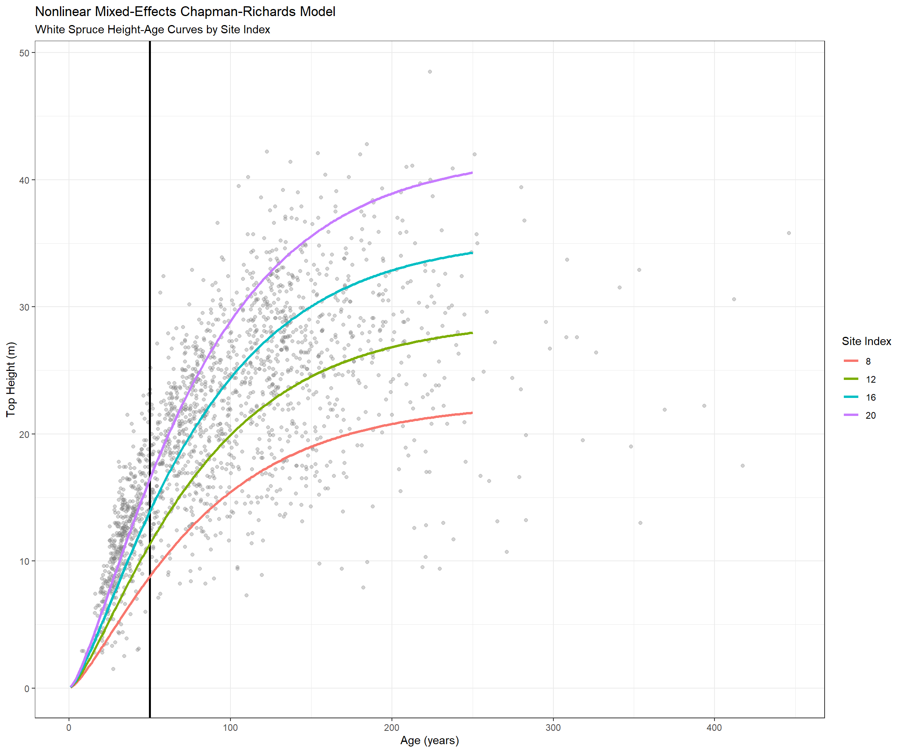
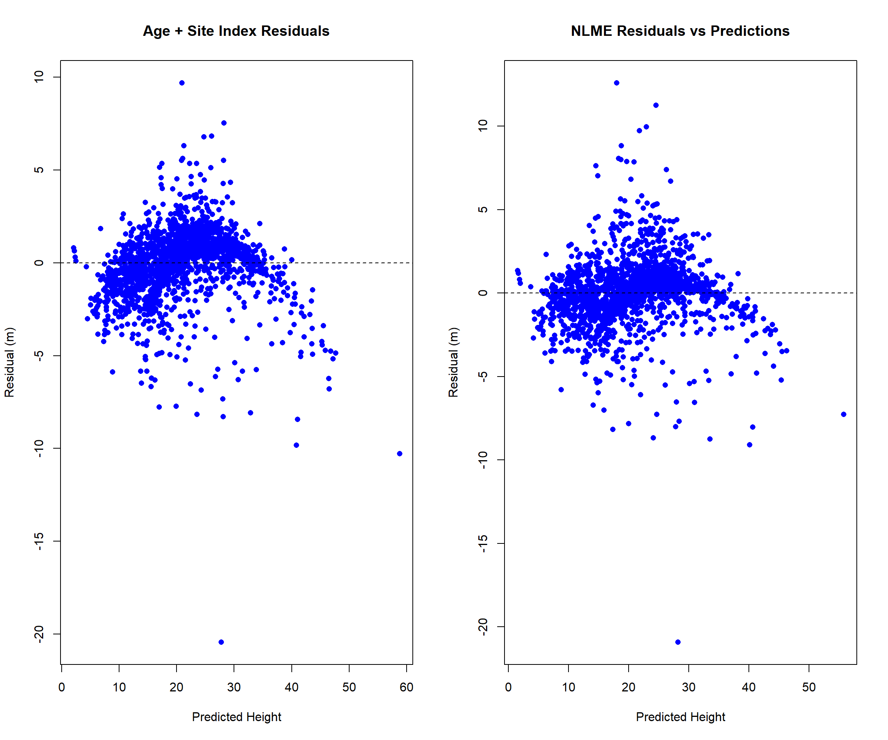

7 Curve Fitting
7.1 Introduction
Curve fitting plays a fundamental role in modelling because it provides a way to translate observed data into mathematical relationships that can be used for prediction, simulation, and decision-making. Forests are governed by complex biological and ecological processes, but many of these processes can be approximated by fitted equations that describe how variables change over time or interact with one another. For example, growth-and-yield models commonly fit curves to relationships between tree age and volume, height and diameter, diameter and biomass, or stand density and productivity. Once fitted, these curves can be used to estimate future forest conditions, timber supply, carbon stocks, habitat characteristics, and disturbance impacts.
In traditional applications, curve fitting is often deterministic. A model might fit a Logistic, LogNormal, Weibull, or other growth function to historical measurements and produce a single “best-fit” parameter set. The resulting curve represents the average expected relationship in the data.The primary objective is usually prediction accuracy and biological realism.
However, modern modelling increasingly recognizes that forests dynamics are inherently uncertain. Growth rates vary among sites, disturbance processes are stochastic, future climates are unknown, and observations contain measurement error. In these situations, curve fitting evolves into statistical inference, where the goal is not only to estimate the best-fitting curve but also to quantify uncertainty around it. Bayesian methods, mixed-effects models, and MCMC approaches are examples of this shift.
The wildfire-size MCMC model discussed in the previous chapter is a good example. It performed a form of curve fitting because it is fitting a hybrid Lognormal-Pareto distribution to the observed fire-size data. However, instead of producing a single fitted curve, it estimates a probability distribution of possible parameter values and therefore a family of plausible curves. The output includes uncertainty about the fitted distribution as well as uncertainty in future simulations.
In the broader context of forest modelling, curve fitting serves four major purposes:
- Description
Summarizing observed forest patterns with mathematical relationships (e.g., diameter distributions or age-volume curves).
- Prediction
Estimating future forest conditions such as stand volume, biomass, carbon storage, habitat suitability, or wildfire occurrence.
- Simulation
Providing equations that drive larger forest landscape models, timber supply models, succession models, or disturbance simulations.
- Uncertainty Quantification
Estimating confidence intervals, credible intervals, and alternative future outcomes through Bayesian or stochastic modelling approaches.
7.1.1 The Chapman-Richards height-age model
This analysis was designed to demonstrate the progression from simple curve fitting to more realistic forest growth modelling using FAIB White Spruce ground plot data. Beginning with a dataset of 1,810 white spruce observations containing stand age, top height, and site index information, a series of Chapman-Richards height-age models were fitted to evaluate how increasing levels of ecological information improve growth predictions.
The Chapman-Richards growth model is a flexible nonlinear equation widely used in forestry to describe biological growth processes such as dominant height, volume, diameter, and biomass development over time. The model produces a sigmoidal (S-shaped) growth curve that closely reflects how trees and forest stands grow in nature: growth is initially slow in young stands, accelerates during the rapid juvenile and mid-rotation stages, and then gradually slows as the stand approaches a biological maximum.
\[H = a(1-e^{-bA})^c\]
where:
- \(H\) = top height (m)
- \(A\) = stand age (years)
- \(a\) = asymptotic maximum height
- \(b\) = growth rate parameter
- \(c\) = curve shape parameter
In its common form, parameter a represents the asymptotic maximum
height (asymptotic means that the predicted value approaches an upper
limit but never quite reaches it. For a tree height curve, the asymptote
represents the theoretical maximum height that the stand approaches as
age becomes very large and growth radually slows toward zero.), b
controls the rate of growth, and c determines the shape and inflection
of the curve. Because each parameter has a biological interpretation,
the Chapman-Richards model is particularly useful for developing
realistic forest height-age relationships and site productivity curves.
The workflow first fit an age-only Chapman-Richards model to describe average height development across all stands and then developed a separate curve for poor productivity sites to examine growth patterns under low site quality conditions. The workflow then extended the Chapman-Richards model to include Site Index as a continuous measure of productivity, allowing the asymptotic height component to vary according to site quality and generating a family of site-specific height-age curves.
\[H = (a + dSI)(1 - e^{-bA})^c\]
where:
- \(H\) = top height (m)
- \(A\) = stand age (years)
- \(SI\) = Site Index (m at breast-height age 50)
- \(a\) = baseline asymptotic height parameter
- \(d\) = Site Index effect parameter
- \(b\) = growth rate parameter
- \(c\) = curve shape parameter
The term \((a + dSI)\) allows the asymptotic height component to vary with site quality, producing a family of height-age curves in which more productive sites attain greater heights while maintaining a common growth form. As a result, stands with the same age but different Site Index values are predicted to follow different growth trajectories, reflecting the influence of environmental conditions on long-term stand development.
Code
#####################################################################
# FAIB WHITE SPRUCE HEIGHT-AGE MODELLING WORKFLOW
#
# Demonstrates:
# 1. Age-only Chapman-Richards growth model
# 2. Poor Site growth model
# 3. Age + Site Index growth model
# 4. Model comparison
# 5. Residual diagnostics
# 6. Site productivity growth trajectories
#
# Dataset:
# faib_compiled_spcsmries_siteage.csv
#
#####################################################################
library(tidyverse)
library(gt)
#---------------------------------------------------------------
# Load Data
#---------------------------------------------------------------
dat <- read.csv("./faib_compiled_spcsmries_siteage.csv")
#--------------------------------------------------------------------
# 2. Build White Spruce Dataset
#--------------------------------------------------------------------
sw <- dat %>%
filter(
SPECIES == "SW",
!is.na(AGET_TLSO),
!is.na(HT_TLSO),
!is.na(SI_M_TLSO),
AGET_TLSO > 0,
HT_TLSO > 0,
SI_M_TLSO > 0
)
#--------------------------------------------------------------------
# 3. Create Site Index Classes
#--------------------------------------------------------------------
sw$SI_CLASS <- cut(
sw$SI_M_TLSO,
breaks = c(0,10,15,20,100),
labels = c(
"Poor",
"Medium",
"Good",
"Excellent"
)
)
#--------------------------------------------------------------------
# 4. Utility Function
#--------------------------------------------------------------------
#The model_stats() function evaluates the performance of a predictive model
#by comparing observed values (obs) with model-predicted values (pred).
#It calculates the Root Mean Square Error (RMSE), which measures the
#average magnitude of prediction errors in the original units of the
#response variable, with lower values indicating better model accuracy.
#The function also calculates the coefficient of determination (R²) by
#comparing the residual sum of squares (ss.res) to the total sum of squares
#(ss.tot). R² represents the proportion of variation in the observed data
#explained by the model, with values closer to 1 indicating a better fit.
#The function returns both statistics in a data frame, providing a concise
#summary of model performance for comparing alternative growth models.
model_stats <- function(obs, pred){
rmse <- sqrt(mean((obs - pred)^2))
ss.res <- sum((obs - pred)^2)
ss.tot <- sum((obs - mean(obs))^2)
r2 <- 1 - ss.res / ss.tot
return(
data.frame(
RMSE = rmse,
R2 = r2
)
)
}
#This section fits an age-only Chapman-Richards height growth model to the white
#spruce dataset using nonlinear least squares (nls). The model estimates the
#parameters a, b, and c, which respectively represent the asymptotic
#maximum height, growth rate, and curve shape, using stand total age (AGET_TLSO)
#as the sole predictor of top height (HT_TLSO). Initial parameter values are
#supplied to aid model convergence, and the fitted model summary is examined to
#assess parameter significance and overall fit. Predicted heights
#are then generated for all observations using the fitted model, and the
#predictions are compared with the observed heights through the model_stats()
#function.
fit.age <- nls(
HT_TLSO ~ a * (1 - exp(-b * AGET_TLSO))^c,
data = sw,
start = list(
a = 35,
b = 0.01,
c = 1.5
)
)
print(summary(fit.age))
##
## Formula: HT_TLSO ~ a * (1 - exp(-b * AGET_TLSO))^c
##
## Parameters:
## Estimate Std. Error t value Pr(>|t|)
## a 27.73359 0.35628 77.84 <2e-16 ***
## b 0.02273 0.00165 13.78 <2e-16 ***
## c 1.40315 0.11159 12.57 <2e-16 ***
## ---
## Signif. codes: 0 '***' 0.001 '**' 0.01 '*' 0.05 '.' 0.1 ' ' 1
##
## Residual standard error: 5.288 on 1807 degrees of freedom
##
## Number of iterations to convergence: 7
## Achieved convergence tolerance: 1.965e-06
pred.age <- predict(fit.age)
stats.age <- model_stats(
sw$HT_TLSO,
pred.age
)
stats.age_gt <- stats.age %>%
mutate(Model = "Age Only") %>%
dplyr::select(Model, RMSE, R2)
stats.age_gt %>%
gt() %>%
fmt_number(
columns = c(RMSE, R2),
decimals = 3
) %>%
cols_label(
RMSE = "RMSE (m)",
R2 = "R²"
) %>%
tab_header(
title = "Model Performance Statistics"
)| Model Performance Statistics | ||
| Model | RMSE (m) | R² |
|---|---|---|
| Age Only | 5.283 | 0.576 |

The Age Only Chapman-Richards model explained approximately 57.6% of the variation in observed white spruce top heights (R² = 0.576), indicating that stand age is an important predictor of height growth but does not fully account for differences among stands. The model’s RMSE of 5.28 m indicates that predicted heights differed from observed heights by an average of about ±5.3 m, which is relatively large for operational growth modelling. These results suggest that while the model successfully captures the general pattern of increasing height with age, substantial variability remains unexplained because stands of the same age can exhibit very different heights depending on factors such as site productivity, soil conditions, climate, and stand history. Consequently, age alone provides only a moderate description of white spruce height development and highlights the need to incorporate additional explanatory variables, such as Site Index, to more accurately characterize growth trajectories.
Code
#====================================================================
# MODEL 2
# POOR SITE CURVE
#====================================================================
poor <- subset(
sw,
SI_CLASS == "Poor"
)
fit.poor <- nls(
HT_TLSO ~
a * (1 - exp(-b * AGET_TLSO))^c,
data = poor,
algorithm = "port",
start = list(
a = 25,
b = 0.01,
c = 1
),
lower = c(
a = 10,
b = 0.0001,
c = 0.1
),
upper = c(
a = 50,
b = 0.1,
c = 5
)
)
print(summary(fit.poor))
##
## Formula: HT_TLSO ~ a * (1 - exp(-b * AGET_TLSO))^c
##
## Parameters:
## Estimate Std. Error t value Pr(>|t|)
## a 23.829491 0.972806 24.496 < 2e-16 ***
## b 0.014380 0.002974 4.835 2.32e-06 ***
## c 2.020375 0.603559 3.347 0.000941 ***
## ---
## Signif. codes: 0 '***' 0.001 '**' 0.01 '*' 0.05 '.' 0.1 ' ' 1
##
## Residual standard error: 4.191 on 250 degrees of freedom
##
## Algorithm "port", convergence message: relative convergence (4)
pred.poor <- predict(fit.poor)
stats.poor <- model_stats(
poor$HT_TLSO,
pred.poor
)
stats.poor_gt <- stats.poor %>%
mutate(Model = "Poor Only") %>%
dplyr::select(Model, RMSE, R2)
stats.poor_gt %>%
gt() %>%
fmt_number(
columns = c(RMSE, R2),
decimals = 3
) %>%
cols_label(
RMSE = "RMSE (m)",
R2 = "R²"
) %>%
tab_header(
title = "Model Performance Statistics"
)| Model Performance Statistics | ||
| Model | RMSE (m) | R² |
|---|---|---|
| Poor Only | 4.167 | 0.478 |

The Poor Site Chapman-Richards model explained approximately 47.8% of the variation in white spruce top height within stands classified as having poor site productivity (R² = 0.478), indicating that age alone provides only a moderate description of height development under low-productivity growing conditions. The model’s RMSE of 4.17 m suggests that predicted heights differed from observed heights by an average of about ±4.2 m, which represents a modest improvement in prediction error compared to the age-only model fitted across all sites. However, the relatively low R² indicates that substantial variability remains unexplained, likely reflecting differences in local site conditions, stand history, microsite factors, and measurement variability even among stands sharing similar low site productivity ratings. These results suggest that while a poor-site-specific height curve captures the general growth pattern of low-productivity white spruce stands, additional explanatory variables beyond age are required to accurately characterize height development across the full range of observed conditions.
Code
#====================================================================
# MODEL 3
# AGE + SITE INDEX
#====================================================================
#This section fits a Chapman-Richards height growth model that incorporates both
#stand age and Site Index, allowing site productivity to directly influence
#projected height development. Instead of assuming a single growth trajectory
#for all white spruce stands, the model modifies the asymptotic height parameter
#through the term (a + d × SI_M_TLSO), where Site Index (SI_M_TLSO) acts as a
#continuous measure of site productivity. The remaining Chapman-Richards
#parameters control the rate and shape of height growth as a function of age
#(AGET_TLSO). As a result, stands with higher Site Index values are projected to
#follow taller growth trajectoriesthan stands on less productive sites, while
#maintaining a common underlying growth form.
#This approach produces a family of biologically realistic height-age curves
#that account for differences in site quality and typically explains
#substantially more variation in observed heights than an age-only model.
fit.si <- nls(
HT_TLSO ~
(a + d * SI_M_TLSO) *
(1 - exp(-b * AGET_TLSO))^c,
data = sw,
#The "port" optimization algorithm is an alternative fitting method available
#in R's nls() function that allows you to place parameter constraints (bounds)
#on the values being estimated. Unlike the default Gauss-Newton algorithm,
#which can freely search the entire parameter space, the "port" algorithm
#restricts the search to user-specified lower and upper limits, ensuring that
#parameter estimates remain within biologically reasonable ranges
algorithm = "port",
start = list(
a = 10,
d = 1,
b = 0.02,
c = 1.3
),
lower = c(
a = 0,
d = 0,
b = 0.0001,
c = 0.1
)
)
print(summary(fit.si))
##
## Formula: HT_TLSO ~ (a + d * SI_M_TLSO) * (1 - exp(-b * AGET_TLSO))^c
##
## Parameters:
## Estimate Std. Error t value Pr(>|t|)
## a 1.160e+01 2.368e-01 48.97 <2e-16 ***
## d 1.834e+00 3.097e-02 59.20 <2e-16 ***
## b 9.959e-03 3.199e-04 31.13 <2e-16 ***
## c 1.168e+00 1.987e-02 58.76 <2e-16 ***
## ---
## Signif. codes: 0 '***' 0.001 '**' 0.01 '*' 0.05 '.' 0.1 ' ' 1
##
## Residual standard error: 1.887 on 1806 degrees of freedom
##
## Algorithm "port", convergence message: relative convergence (4)
pred.si <- predict(fit.si)
stats.si <- model_stats(
sw$HT_TLSO,
pred.si
)
stats.si_gt <- stats.si %>%
mutate(Model = "Age and SI") %>%
dplyr::select(Model, RMSE, R2)
stats.si_gt %>%
gt() %>%
fmt_number(
columns = c(RMSE, R2),
decimals = 3
) %>%
cols_label(
RMSE = "RMSE (m)",
R2 = "R²"
) %>%
tab_header(
title = "Model Performance Statistics"
)| Model Performance Statistics | ||
| Model | RMSE (m) | R² |
|---|---|---|
| Age and SI | 1.885 | 0.946 |
The Age + Site Index Chapman-Richards model provided an excellent fit to the white spruce data, explaining approximately 94.6% of the observed variation in top height (R² = 0.946) while achieving a low RMSE of 1.89 m. This represents a substantial improvement over models based on age alone and demonstrates that Site Index is a critical determinant of white spruce height growth. The strong model performance indicates that the combination of stand age and site productivity captures nearly all of the systematic variation in observed heights, resulting in accurate and biologically realistic growth trajectories across a wide range of site conditions.

The residual plots show a clear improvement in model performance when Site Index is incorporated into the growth model. In the Age-Only model (left panel), residuals become increasingly dispersed as predicted height increases, producing a distinct fan-shaped pattern. This indicates heteroscedasticity and suggests that age alone cannot adequately explain differences in height among stands, particularly at larger heights where both high- and low-productivity sites are forced onto the same growth trajectory. The large spread of positive and negative residuals at higher predicted heights indicates systematic under- and over-prediction across different site qualities, helping explain the relatively modest model performance (R² = 0.576).

In contrast, the Age + Site Index model (right panel) produces a much tighter clustering of residuals around zero, demonstrating that site productivity accounts for a substantial proportion of the variation previously left unexplained. The overall magnitude of residuals is markedly reduced, consistent with the improvement in model fit (R² = 0.946 and RMSE = 1.885 m). Although a slight curved pattern remains, suggesting some residual structure that may reflect stand-level differences, microsite conditions, or repeated measurements within plots, the residuals are generally more evenly distributed and exhibit far less variance than the age-only model.

The residual histograms provide a visual comparison of the error distributions for the Age-Only and Age + Site Index Chapman-Richards models. The Age-Only residuals (left panel) exhibit a broad distribution spanning approximately -20 m to +20 m, indicating substantial prediction error and considerable unexplained variation in stand height when age is used as the sole predictor. In contrast, the Age + Site Index residuals (right panel) are much more tightly concentrated around zero, with the majority of residuals falling within a relatively narrow range of approximately ±3 m. This dramatic reduction in the spread of residuals demonstrates that incorporating Site Index accounts for much of the variability previously left unexplained by age alone. The near-symmetric distribution centered on zero suggests that the Age + Site Index model exhibits minimal overall bias and provides substantially more accurate predictions, which is consistent with its higher R² (0.946) and lower RMSE (1.885 m).
7.1.2 Mixed Effects Chapman-Richards model
This analysis extends the previously developed Chapman-Richards height-age-site index model by incorporating a nonlinear mixed-effects modelling framework that accounts for repeated measurements and stand-to-stand variability within the white spruce dataset. While the fixed-effects Chapman-Richards model assumes that all stands sharing the same age and site productivity follow a common growth trajectory, forest inventory data often contain multiple observations from the same permanent or temporary sample plot, resulting in correlated measurements that violate the assumption of statistical independence. To address this, a nonlinear mixed-effects (NLME) version of the Chapman-Richards model was fitted using stand age and Site Index as fixed effects while allowing the asymptotic height parameter to vary among individual plots through a plot-level random effect. This approach recognizes that stands with similar ages and site indices may nevertheless differ in growth potential due to factors such as microsite conditions, soil properties, disturbance history, genetics, and measurement variation.
Model performance was evaluated using several complementary approaches to assess both predictive accuracy and overall model adequacy. Information criteria, including the Akaike Information Criterion (AIC) and Bayesian Information Criterion (BIC), were used to compare the competing model formulations while accounting for differences in model complexity. Lower AIC and BIC values indicate a better balance between goodness-of-fit and the number of parameters being estimated. Additional evaluation was conducted through residual diagnostics, including residual-versus-predicted plots and residual histograms, to identify potential biases, non-linear patterns, heteroscedasticity, and departures from model assumptions. Prediction performance was further quantified using the Root Mean Square Error (RMSE) and coefficient of determination (R²).
Code
#####################################################################
# FAIB WHITE SPRUCE
# NONLINEAR MIXED-EFFECTS CHAPMAN-RICHARDS MODEL
#
# Fixed Effects:
# a, d, b, c
#
# Random Effects:
# Plot-specific asymptotic height (a)
#
# Model:
#
# HT =
# (a + d*SI) *
# (1-exp(-b*Age))^c
#
# a_i = a + u_i
#
# where:
#
# u_i ~ N(0,sigma_plot)
#
#####################################################################
library(nlme)
#====================================================================
# LOAD DATA
#====================================================================
dat <- read.csv(
"./faib_compiled_spcsmries_siteage.csv"
)
sw <- dat %>%
filter(
SPECIES == "SW",
!is.na(AGET_TLSO),
!is.na(HT_TLSO),
!is.na(SI_M_TLSO),
AGET_TLSO > 0,
HT_TLSO > 0,
SI_M_TLSO > 0
)
#====================================================================
# FIT BASE NLS MODEL
#====================================================================
fit.nls <- nls(
HT_TLSO ~
(a + d * SI_M_TLSO) *
(1 - exp(-b * AGET_TLSO))^c,
data = sw,
algorithm = "port",
start = list(
a = 10,
d = 1,
b = 0.02,
c = 1.3
),
lower = c(
a = 0,
d = 0,
b = 0.0001,
c = 0.1
)
)
summary(fit.nls)
##
## Formula: HT_TLSO ~ (a + d * SI_M_TLSO) * (1 - exp(-b * AGET_TLSO))^c
##
## Parameters:
## Estimate Std. Error t value Pr(>|t|)
## a 1.160e+01 2.368e-01 48.97 <2e-16 ***
## d 1.834e+00 3.097e-02 59.20 <2e-16 ***
## b 9.959e-03 3.199e-04 31.13 <2e-16 ***
## c 1.168e+00 1.987e-02 58.76 <2e-16 ***
## ---
## Signif. codes: 0 '***' 0.001 '**' 0.01 '*' 0.05 '.' 0.1 ' ' 1
##
## Residual standard error: 1.887 on 1806 degrees of freedom
##
## Algorithm "port", convergence message: relative convergence (4)
#====================================================================
# STARTING VALUES
#====================================================================
start.vals <- coef(fit.nls)
#print(start.vals)
#====================================================================
# FIT NONLINEAR MIXED-EFFECTS MODEL
#====================================================================
fit.nlme <- nlme(
HT_TLSO ~
(a + d * SI_M_TLSO) *
(1 - exp(-b * AGET_TLSO))^c,
data = sw,
fixed =
a + d + b + c ~ 1,
random =
a ~ 1 | SITE_IDENTIFIER,
start = c(
a = start.vals["a"],
d = start.vals["d"],
b = start.vals["b"],
c = start.vals["c"]
),
control = nlmeControl(
maxIter = 500,
pnlsMaxIter = 50,
msMaxIter = 500
)
)
#====================================================================
# MODEL SUMMARY
#====================================================================
summary(fit.nlme)
## Nonlinear mixed-effects model fit by maximum likelihood
## Model: HT_TLSO ~ (a + d * SI_M_TLSO) * (1 - exp(-b * AGET_TLSO))^c
## Data: sw
## AIC BIC logLik
## 7222.672 7255.678 -3605.336
##
## Random effects:
## Formula: a ~ 1 | SITE_IDENTIFIER
## a Residual
## StdDev: 2.556665 1.06652
##
## Fixed effects: a + d + b + c ~ 1
## Value Std.Error DF t-value p-value
## a 9.404459 0.26066336 299 36.07894 0
## d 1.634454 0.02673347 299 61.13888 0
## b 0.014657 0.00038038 299 38.53187 0
## c 1.435263 0.02385490 299 60.16638 0
## Correlation:
## a d b
## d -0.587
## b -0.081 -0.698
## c -0.203 -0.484 0.933
##
## Standardized Within-Group Residuals:
## Min Q1 Med Q3 Max
## -4.86370259 -0.28974660 0.04217311 0.26662162 3.20326787
##
## Number of Observations: 1810
## Number of Groups: 15087.1.2.1 The NLME model
The nonlinear mixed-effects Chapman-Richards model provides a strong description of white spruce height growth while accounting for repeated measurements within plots. All fixed-effect parameters were highly significant, indicating that stand age and Site Index are important predictors of top height development. The model also identified substantial plot-to-plot variability, with the standard deviation of the plot-level random effect (2.56 m) being considerably larger than the residual error (1.07 m), indicating that individual plots differ in growth potential beyond what can be explained by age and Site Index alone. The inclusion of these random effects resulted in a substantial improvement in model fit compared to the fixed-effects NLS model (AIC = 7222.7 vs. 7441.0), demonstrating that accounting for stand-specific variation captures important environmental differences among plots. With 1,810 observations distributed across 1,508 plots, the model provides a statistically robust representation of both regional white spruce growth patterns and local stand-level variability.
Code
#====================================================================
# PREDICTIONS
#====================================================================
sw$Pred <- predict(
fit.nlme,
level = 0
)
#====================================================================
# MODEL STATISTICS
#====================================================================
model_stats <- function(obs,pred){
rmse <- sqrt(
mean(
(obs-pred)^2
)
)
ss.res <- sum(
(obs-pred)^2
)
ss.tot <- sum(
(obs-mean(obs))^2
)
r2 <- 1 -
ss.res/ss.tot
data.frame(
RMSE = rmse,
R2 = r2
)
}
stats.nlme <- model_stats(
sw$HT_TLSO,
sw$Pred
)
stats.nlme_gt <- stats.nlme %>%
mutate(Model = "nlme") %>%
dplyr::select(Model, RMSE, R2)
stats.nlme_gt %>%
gt() %>%
fmt_number(
columns = c(RMSE, R2),
decimals = 3
) %>%
cols_label(
RMSE = "RMSE (m)",
R2 = "R²"
) %>%
tab_header(
title = "Model Performance Statistics"
)| Model Performance Statistics | ||
| Model | RMSE (m) | R² |
|---|---|---|
| nlme | 2.006 | 0.939 |
Compared to the fixed-effects Age + Site Index Chapman-Richards model (RMSE = 1.885 m, R² = 0.946), the nonlinear mixed-effects (NLME) model produced slightly lower predictive performance when evaluated using population-level predictions (RMSE = 2.006 m, R² = 0.939). At first glance, this might suggest that the simpler model is superior; however, the two models are addressing different objectives. The fixed-effects model seeks a single growth curve that minimizes overall prediction error across all observations, whereas the NLME model explicitly partitions variation into fixed effects (age and Site Index) and plot-level random effects. As a result, some variation that was previously attributed to the fixed growth curve is now recognized as real differences among plots. The NLME model therefore sacrifices a small amount of apparent predictive accuracy while providing a more realistic representation of the correlation structure inherent in repeated plot measurements.
This interpretation is reinforced by the substantial improvement in information criteria achieved by the mixed-effects model, with AIC decreasing from approximately 7441 to 7223 and BIC decreasing from approximately 7469 to 7256. These large reductions indicate that accounting for plot-specific variability greatly improves the statistical explanation of the data, despite the slightly lower population-level R². The random-effect standard deviation of 2.56 m, compared to a residual standard deviation of only 1.07 m, further suggests that differences among plots are an important source of variation in white spruce height growth beyond what can be explained by age and Site Index alone.

The previous chart depicts the heigyt curves relative to an age 50 line. The reason the SI = 20 curve does not intersect the vertical Age 50 line at 20 m is that the model treats Site Index as an explanatory variable rather than enforcing the formal definition of Site Index. Site Index is typically defined as the top height of a stand at breast-height age 50 years, meaning a true SI 20 curve should pass through the point (Age = 50, Height = 20 m). However, the fitted model H=(a+d×SI)(1−e−bA)^c uses Site Index to modify the overall growth trajectory and asymptotic height, but it does not constrain the curve to equal the Site Index value at age 50. Consequently, the fitting process identifies the parameter values that best describe the entire dataset across all ages and site conditions, which can result in the SI 20 curve passing above or below 20 m at age 50. Therefore, the curves shown in the figure are best interpreted as productivity-based height growth curves rather than traditional site-index curves.
The residual plots suggest the nonlinear mixed-effects (NLME) model provides only a modest improvement in residual structure relative to the fixed-effects Age + Site Index model, but it does so by explicitly accounting for plot-level variability. In both panels, residuals remain centered around zero, suggesting little overall prediction bias; however, the NLME residuals are somewhat more tightly clustered near the zero line and exhibit slightly less dispersion across the range of predicted heights. The curved residual pattern observed in the Age + Site Index model is still present, indicating that some systematic variation remains unexplained, possibly due to factors such as stand density, species mixtures, microsite conditions, or limitations of the Chapman-Richards functional form. Nonetheless, the reduced spread and more concentrated residual cloud in the NLME model suggest that incorporating plot-level random effects successfully captures a portion of the stand-to-stand variability that was previously absorbed into the residual error. Combined with the substantial reductions in AIC and BIC, these plots support the conclusion that the mixed-effects model provides a more realistic representation of white spruce growth dynamics while maintaining a similar level of predictive accuracy.
7.1.3 Summary
This exercise demonstrated the development and evaluation of increasingly sophisticated height-growth models for white spruce using the FAIB ground plot database. The analysis began with a simple age-only Chapman-Richards model, which captured the general relationship between stand age and top height but explained only a moderate proportion of the observed variation. A separate poor-site model was then developed to characterize growth under low-productivity conditions, followed by an Age + Site Index Chapman-Richards model that explicitly incorporated site productivity as a predictor of height development. Model comparisons showed that Site Index was a critical driver of white spruce growth, with the Age + Site Index model improving model performance substantially and explaining approximately 95% of the variation in observed heights. Residual diagnostics and growth trajectory plots further demonstrated that accounting for site productivity produced more biologically realistic and accurate predictions than age alone.
The analysis was then extended to a nonlinear mixed-effects framework to account for the repeated-measurement structure present within the FAIB dataset. By allowing individual plots to have their own asymptotic height adjustments through a random effect, the mixed-effects model recognized that stands of similar age and Site Index may still follow different growth trajectories because of unmeasured environmental and stand-level factors. Although the mixed-effects model produced similar prediction accuracy to the fixed-effects Age + Site Index model, it achieved substantially better information criteria and revealed that much of the remaining variation occurred among plots rather than within plots.